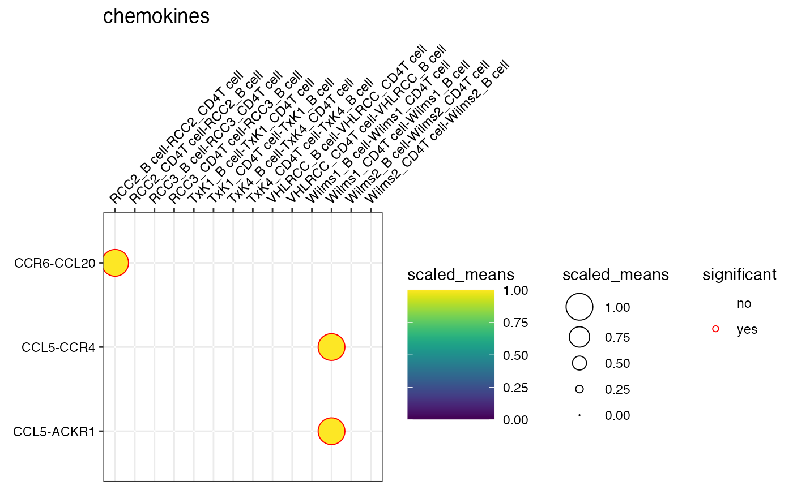

plot_cpdb.RdPlotting CellPhoneDB results
plot_cpdb(
scdata,
cell_type1,
cell_type2,
celltype_key,
means,
pvals,
interaction_scores = NULL,
cellsign = NULL,
max_size = 8,
keep_significant_only = TRUE,
splitby_key = NULL,
gene_family = NULL,
custom_gene_family = NULL,
genes = NULL,
standard_scale = TRUE,
cluster_rows = TRUE,
col_option = viridis::viridis(50),
default_style = TRUE,
highlight_col = "red",
highlight_size = NULL,
max_highlight_size = 2,
special_character_regex_pattern = NULL,
degs_analysis = FALSE,
return_table = FALSE,
exclude_interactions = NULL,
min_interaction_score = 0,
scale_alpha_by_interaction_scores = FALSE,
scale_alpha_by_cellsign = FALSE,
filter_by_cellsign = FALSE,
title = "",
keep_id_cp_interaction = FALSE,
result_precision = 3,
...
)single-cell data. can be Seurat/SingleCellExperiment object
Name of cell type 1. Accepts regex pattern.
Name of cell type 2. Accepts regex pattern.
Column name in metadata/colData storing the celltype annotations. Values in this column should match the second column of the input `meta.txt` used for CellPhoneDB.
Data frame corresponding to `means.txt` from CellPhoneDB.
Data frame corresponding to `pvalues.txt` or `relevant_interactions.txt` from CellPhoneDB.
Data frame corresponding to `interaction_scores.txt` from CellPhoneDB version 5 onwards.
Data frame corresponding to `CellSign.txt` from CellPhoneDB version 5 onwards.
max size of points.
logical. Default is TRUE. Switch to FALSE if you want to plot all the results from cpdb.
column name in the metadata/coldata table to split the spots by. Can only take columns with binary options. If specified, name to split by MUST be specified in the meta file provided to cpdb prior to analysis.
default = NULL. some predefined group of genes. can take one (or several) of these default options: 'chemokines', 'Th1', 'Th2', 'Th17', 'Treg', 'costimulatory', 'coinhibitory', 'niche'. Also accepts name(s) of custom gene families.
default = NULL. If provided, will update the gene_family function with this custom entry. Both `gene_family` (name of the custom family) and `custom_gene_family` must be specified for this to work. Provide either a data.frame with column names as name of family and genes in rows or a named likes like : list('customfamily' = c('genea', 'geneb', 'genec'))
default = NULL. can specify custom list of genes if gene_family is NULL
logical. scale the expression to range from 0 to 1. NULL defaults to FALSE.
logical. whether or not to cluster the rows.
specify plotting colours
default = TRUE. Show all mean values and trace significant interactions with `higlight` colour. If FALSE, significant interactions will be presented as a white ring.
colour for highlighting p <0.05
stroke size for highlight if p < 0.05. if NULL, scales to -log10(pval).
max size of stroke for highlight.
search pattern if the cell type names contains special character. NULL defaults to '/|:|\?|\*|\+|[\]|\(|\)'.
if is CellPhoneDB degs_analysis mode.
whether or not to return as a table rather than to plot.
if provided, the interactions will be removed from the output.
Filtering the interactions shown by including only those above the given interaction score.
Whether or not to filter values by the interaction score.
Whether or not to filter the transparency of interactions by the cellsign.
Filter out interactions with a 0 value cellsign.
Whether or not to keep the id_cp_interaction in the plot.
Sets integer value for decimal points of p_value, default to 3
passes arguments to grep for cell_type1 and cell_type2.
ggplot dot plot object of cellphone db output
# \donttest{
data(kidneyimmune)
data(cpdb_output)
plot_cpdb(kidneyimmune, "B cell", "CD4T cell", "celltype", means, pvals, splitby_key = "Experiment", genes = c("CXCL13", "CD274", "CXCR5"))
#> No significant genes found and plotting will not proceed.
#> [1] NA
plot_cpdb(kidneyimmune, "B cell", "CD4T cell", "celltype", means, pvals, splitby_key = "Experiment", gene_family = "chemokines")

# }